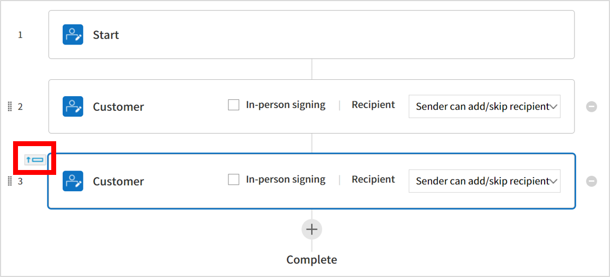

Templates are electronic documents used for the eformsign service. They are e-documents transformed from existing
paper forms such as applications, contracts, and agreements. You can create and upload templates in the eformsign service with its Web form designer or Form builder.
Tip
Using Templates is useful for documents that need to be sent often or regularly. If the tempate is registered once, you don’t have to upload the document file whenever you need to sent the document. You can just easily create and sent documents using the template.
To create and send electronic documents via eformsign, you have to create a template first which can be transformed into an e-document.
How to create a template with Form Builder (MS Office Add-in)
To create a template with Form builder (MS Office Add-in), you must first download eformsign Form builder.
Note
For more information about Form builder (MS Office Add-in), please refer to Form builder.
MS Office files such as Word, Excel, and PowerPoint can be uploaded as a template using the eformsign Microsoft Office Add-in.
Open a Word, Excel, or PowerPoint file.
Go to the OZ in Word/Excel/PowerPoint menu in the file.
Choose a location you want to add a field.
Select a field type.
Adjust the size and position of the field.
Click the Execute button to preview the field.
Click the Upload button to upload the file as a template.
Click Create template and set details for the template.
Template settings
You can set the details for the template.
General
Set the template name, abbreviation, document name, document number, etc.
Set permissions
Grant members or groups the permission to use and edit the template and to create documents from it and manage them.
Workflow
Sets the workflow for the document from its creation to completion.
Field
Sets the default values and auto-filled values for fields.
Notification settings
Sets the recipients, and the content of the notification messages for notifying changes in the status of documents created from the template.
Set basic information about the template including the template name, category, validity period, etc.
① Form file
The name of the form file which is uploaded to eformsign from Word, PowerPoint, or Excel using Form Builder. To change the form file name, you need to change the file name of the uploaded Word, PowerPoint, or Excel file and then update it.
② Template name
The template name will be displayed in the Manage templates and New from template pages.
The recommended length of the template name is about 11 characters, including spaces. If the name is longer than 11 characters, you can see the full name by hovering the mouse over the name.
A short name that briefly descries the template. It is recommended to use two or three words.
Template abbreviation can be used in the document number, document name, mail template, etc.
④ Category
Category is used to sort templates by type. With the category name, you can filter templates in the Manage templates menu, and can filter documents in the Documents menus and the Manage documents menu. You can choose from an existing category or create a new category by entering a new name.
You can set multi-level categories with a separator ( / ). For example, if you set a category as HR Team/Vacation, the Vacation category in the HR category is created.
⑤ Description
Enter additional comments about the template. This description is displayed under the template name in the New from template.
⑥ Template validity period
Sets the time period in which documents can be created from this template. By default, the start date is set to the uploaded date and you can change the date.
When No expiry date is checked, documents can be created without a time limit. If you check No expiry date, documents can be created without a time limit. If you uncheck it and set the date, then documents can be created from the template up to that date.
Configure additional settings including document naming rules for documents created from the template.
⑦ Document naming rule
Sets the document name when creating the document from the template. If a document naming rule is not set, the template name will be the document name.
⑧ Allow document name change
If Allow document name change is checked, the document creator can change the document name.
⑨ Generate a document number
If Generate a document number is checked, documents are automatically numbered. You can select the document number format and the workflow step in which document numbers are generated.
⑩ Skip pop-up window when sending documents
Use it when many documents are created and submitted. If this option is unchecked, a pop-up window for entering a message will appear when sending a document. When Skip pop-up window when sending documents is checked, the pop-up window does not appear and the page proceeds to the next step.
In Template settings, you can set the document naming rule for documents created from a template.
You can make a piece of information entered into a document or document-related information to be automatically entered into the document name. If you set the document naming rule, then the document name is automatically entered based on the information of the document.
As well, you can see this name in all document pages (In progress, Action required and Completed) and the Manage document page.
Note
Only the Company administrator or Template managers can perform this action.
Component ID: Adds a piece of information in the document into the document name.
Click the Add reserved word button, and click Component ID to display the list of field IDs and then select the desired field ID. The information in that particular field will be added to the document name.
General info: Adds document-related information into the document name.
Click General info to display the list of information type and then select the desired information. Information types are as follows.
Information types
Description
Current_date
The date in which the document is created
(e.g. Feb 20, 2020)
Current_time
The time in which the document is created
(e.g. 02:59 pm)
Current_datetime
The date and time in which the document is
created (e.g. Feb 20, 2020, 02:59 pm)
Creator_ID
The ID of the member who created the document
Creator_name
The name of the member who created the
document
Creator_dept
The department of the member who created the
document
Creator_company Name
The name of the company in which the member
who created the document belongs to
Template_name
The template name entered in Template
settings > General
Template_abbreviation
The template abbreviation entered in Template
settings > General
Company
The company name entered in Manage company >
Company profile
Company_address
The address entered in Manage company >
Company profile
Company_contact_no
The contact information entered in Manage
company > Company profile
The business registration number entered in
Manage company > Company profile
Company_homepage
The homepage URL entered in Manage company >
Company profile
Tip
Check the status of the Allow document name change field.
Even if the document naming rule is set, if the Allow document name change option is checked, the document creator can arbitrarily change the document name. If you do not want the document name to be changed, then make sure to uncheck the Allow document name change option.
General > Generating and Viewing a Document Number
You can set a document number for documents created in eformsign. You can set it so that a document number is generated automatically for each template, and can select one of four document numbering formats. The document number can be generated in the document using the document field. You can also see a separate column in the document list and search documents by the document number.
A document number can be viewed in the Documents menus (In progress, Action required, and Completed), and the Manage documents menu (requires document management permission).
In the sidebar, click the Completed or Manage documents menu.
Click the column settings icon at the top right corner of the page.
Check Document number in the column list.
Check that the document number column is added.
Searching for a document using a document number
You can search a document by its document number via advanced search.
Go to the Completed or Manage documents page.
Click the Advanced button at the top right corner of the page.
Select Document number among the search conditions.
You can set the permissions for the template usage, template editing and document management.
Template usage
This permission is needed to create documents from the template, and you can select Allow all or Group or member to allow all the members or some members in the company to create documents from the template.
Template editing
This permission is needed to edit the template, and you can select Members to allow editing the template.
Document management
You can select groups or members to open documents created from the template, void completed documents, or remove documents permanently. You can grant permission for all or some of the three options described below.
Open all documents (default): Default permission granted to a document manager and gives the permission to open all documents to authorized groups or members.
Void documents (optional): Permission for voiding completed documents when requested by the document creator.
Remove documents (optional): Permission to permanently remove documents from the system.
Go to the Workflow configuration page by clicking the Workflow tab.
Click the add button () which is in between the Start and Complete steps.
Select the type of recipient which you want to add.
Tip
You can add as many steps as you want. You can adjust the order of steps by clicking and dragging a workflow step.
To delete a step, click - on the right side of the step button.
Tip
Merge workflow steps
You can merge multiple workflow steps into one so that documents can be sent to all recipients at the same time, regardless of the signing order. You can also split workflow steps that are merged together.
Instructions:
Go to Manage templates > Template settings> Configure > Workflow.
Click the workflow step you want to merge with (when merging two steps, you must click the bottom one).
Click the Merge signing order icon displayed at the top left corner of the selected workflow step. The bottom and top workflow steps will be merged together.
You can also split workflow steps by clicking the same icon.

❗ Note that this feature is available only in New from template. For New from my file, the feature is planned to be available in the future.
You can click a step to set the details such as Properties and Manage items for each workflow step.
In Properties, you can configure the details of the step including the step name and recipients.
In Manage items, you can set the fields in which the recipient has access to or is required to fill in.
Start: Step for creating a document
Step name: Change the name of the step. The default name is ‘Start’.
Limit the number of documents: Set the maximum number of documents that can be created from the template.
Create documents from URL: Create a public link for external recipients (non-members) to review and sign documents directly via URL without the need to login to the eformsign service.
Approved domain IP: Set to allow creating documents only form approved domains or IPs.
Do not allow duplicate documents: Prevent the creation of duplicate documents and allows to select a field for determining whether a document is duplicated or not.
Tip
How to generate QR code when using the ‘Create documents from URL’ option
When creating a signing link by using the ‘Create document form URL’ option, you can generate a QR code instead of a signing link. You can upload the QR code image on a website or share it with others so the people can create and submit documents by scanning the image using the camera on a mobile device.
Select the Create documents from URL option in the Start step of the workflow and click the
Generate QR code button to download the image file.
Recipient: Step for signing or filling out a document
Step name: Change the name of the step. The default name is ‘Start’.
Notification: Select how recipients can receive notifications and edit their content.
By default, notifications are sent by email. You can also select SMS to send notifications via text messages.
Edit notification message: You can edit the notification message for each step.
Document expiration: Set the time period in which documents can be sent by the recipient of the step. If the time period is set to 0 day 0 hour, then there is no document expiration. No document expiration is only available for members.
Automatically fills in the recipient’s contact info: When sending documents to a recipient, this option allows the name and contact of the recipient to be filled in automatically based on the information the recipient enters into the document.
Identify verification: Require non-member recipients to verify their identity when opening the document.
Require document password: Set a verification password that recipients must enter before opening the document. The password can be the recipient name, a value entered directly by the sender, or the value of a field in the document.
Require email/SMS verification: Require recipients to verify their identity using email/SMS. A 6-digit code will be sent to recipients’ email address/mobile number and the recipients must enter the code in the identity verification window.
Hide files or sheets: Allows you to choose which files/sheets in the document are hidden from the recipient, if the form consists of two or more files. This option cannot be applied to company members.
Note
Selecting participants/reviewers in a workflow step
For any given step other than Start and Complete, you can choose to pre-select recipients or choose to allow the sender to select recipients before sending a document.
Sender can add/skip recipient: Allows the sender to enter the contact information of the recipients before sending the document. If the sender does not enter the contact information, this step is skipped.
Sender needs to add recipient: Requires the sender to enter the contact information of recipients before sending the documents. If the sender does not enter the contact information, the document is not sent.
Group or member: Allows you to pre-select recipients. You can only select groups or members in your company.
Recipient of a previous step: Allows you to select the person of a previous step including the Start step.
If you add multiple files to a document, you can hide certain files from recipients in a workflow step. If you upload multiple files to a document, then the Hide files or sheets option appears in the Properties tab of workflow steps in Template settings where you can choose to hide or show each file.
❗Note that the ‘Hide files or sheets’ option is only available when sending a document to non-member recipients.
Instructions
Go to Sidebar menu Manage templates.
Click the Settings icon (⚙)of the desired template.
Go to Configure > Workflow.
Select the desired recipient step.
Select the Hide files or sheets option in Properties on the right.
For each file or Excel sheet, select one of the options below.
Required: The file or sheet is shown to the recipient.
Optional: The document creator can choose whether to show or hide the file or sheet to the recipient.
Hide: The file or sheet is hidden from the recipient.
Complete: Step in which a document is finally completed
Step name: Change the name of the step. The default name is ‘Complete’.
Backup completed documents in external cloud storages: Allow the document to be stored in external cloud storages connected to eformsign by the administrator or company managers.
Timestamp the document when completed: Allow the completed document to be timestamped which proves that the document remains unchanged since that time. This feature will incur an extra charge.
In the Field menu, you can set the default values or auto-fill values for fields in the template, and adjust the order of the fields.
You can set the default value of a field to be the value saved in company/group/member information in Manage custom fields. You can also choose it to be the value entered recently or a value entered manually.
Tip
How to configure auto-fill
You can save information that are frequently entered into a document so that they can be used for auto-filling later.
For example, you can pre-save information about your company or group (such as department name, leader, and representative number) and information about the document creator (including name and contact details). You can add items for related fields and set the default values in Manage company > Manage custom fields.
In the Manage custom fields screen, add a field.
Go to the Manage templates menu.
Click the Template settings icon.
Go to the Field menu.
Enter the default value for the field that you want to be auto-filled.
After completing all the settings, click the Save button.
You can select the recipients of status notification messages, and view and edit the messages for documents created from the template.
Document status notifications
You can select who will receive status notifications for documents created from the template. You can also preview the following notification message types: approved, reviewed and signed, rejected, voided, and corrected. As well, you can edit and preview the notification messages for completed documents.
Note
When the Document creator option is checked but the Step handler option is unchecked, a status notification is sent to the person who originally created the document.
When the Document creator option is unchecked but the Step handler option is checked, status notifications are sent to people who have processed the document before the current step, except the document creator.
When the Document creator and Step handler options are both checked, status notifications are sent to both the document creator and the people who have processed the document before the current step.
When the Document creator and Step handler options are both unchecked, no notifications will be sent for that status.
Caution
❗When the Document creator option for When the document is completed is checked and an external recipient creates and submits a document via a URL, the external recipient must enter his/her email in which a notification will be sent to when the document is completed.
Editing document status notifications
Select notification template: The document status notification template is set to the default template, but you can change it to another template if you create one. For information on how to create a new notification template, refer to Notification Template Management.
Email title: Sets the title of the email sent when a document is completed.
SMS message: Sets the message when a document completion notification is sent via SMS. A link for viewing the document is sent together with the message.
Note
The message size can be a maximum of 65 bytes (65 characters).
File attachments and methods: Select the files to be send together with the document completion notification and select the filees to be attached.
Download link: A download link button is included in the email or SMS of a completed document, and opens a document viewer page when clicked. In the viewer page, you can view and download the document.
Attachment: PDF file(s) are included in the email. However, if the size of the document exceeds 10 MB or file(s) are sent via SMS, then a download link is included instead.
Caution
Attachment If you send an email notification using the Attachment method, the completed document is included in the email. Therefore, even if is configured to require the recipient to go through identity verification, the recipient can still view and download the document.
Edit body: Edits the body of the notification message.
Duplicate: Duplicates the template. The template’s file and detailed settings for the template will be duplicated. You will have
a chance to change and save the detailed settings before the template is duplicated.
Delete: Deletes the template. Once a template is deleted, you can no longer create documents from that template.
Download file: Click Download file to download a form in the format is was uploaded (e.g. Word, Excel, etc.).
Deactivate: When a template is deactivated, it will not be shown in the New from template page for other members.
Change owner: You can change the owner of the template. By default, the person who created the template is automatically assigned as the template owner. If you want to make changes later, you can change the owner to another member by clicking this menu. The new template owner can be selected among members who have permission to manage templates.

 ) of the desired template.
) of the desired template.


{kind=link}
{kind=link}
{kind=link}
{kind=link}
{kind=link}
{kind=link}

 ) which is in between the Start and Complete steps.
) which is in between the Start and Complete steps.{kind=link}
{kind=link}
{kind=link}
{kind=link}
{kind=link}
{kind=link}
{kind=link}
{kind=link}
{kind=link}
{kind=link}

 ) right next to the template name to see the menus that can be set for each template.
) right next to the template name to see the menus that can be set for each template.{kind=link}